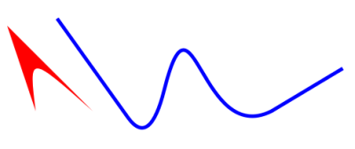

On MenuItems, all text after a tab character will now be aligned to the right of the item. This feature, called accelerator text is typically used to display an accelerator shortcut. Example:
MenuItem item = new MenuItem( parent, SWT.PUSH ); item.setText( "Push One\tCtrl+Shift+1" ); item.setAccelerator( SWT.CTRL | SWT.SHIFT | '1' );
It's now possible to listen to changes of the display size.
The display size changes whenever the browser is resized or when a mobile device is rotated.
To do so, attach an untyped SWT.Resize listener to the Display
as shown in the example below.
Please note that this feature is not yet supported in SWT ().
display.addListener( SWT.Resize, new Listener() {
public void handleEvent( Event event ) {
System.out.println( "Display size: " + event.width + "x" + event.height );
}
} );
The methods GC.drawPath( Path ) and GC.fillPath( Path ) have been
implemented.
Now it's possible to draw complex shapes using the Path API.

Support for the CSS properties background-position and background-repeat
has been added to the following widgets: Button, FileUpload,
Composite, Label, CLabel, Text and Link.
See for more details.
Composite {
background-repeat: no-repeat;
background-position: right bottom;
...
}
RAP now uses CSS3 to render rounded borders and gradients in Internet Explorer 10. Previously SVG or VML were used (and still are, on older browser) to achieve these effects. With this update there are considerably less DOM elements created than before.
Until now, you had to turn off session cookies in the servlet container in order to support access to a RAP application from multiple browser tabs. This is not needed anymore. The framework can now handle multiple connections from within the same HTTP session. For every connection, a new UISession will be created.
A UISession now provides a reference to the ApplicationContext it belongs to. This allows to access application-scoped instances such as the resource manager from a non-UI thread without having to wrap the code in a UISession runnable. For example, the following code:
uiSession.exec( new Runnable() {
public void run() {
RWT.getApplicationContext().getAttribute( "foo" );
}
} );
can now be replaced with this one-liner:
uiSession.getApplicationContext().getAttribute( "foo" );
In RAP 2.0, we introduced the RemoteObject API that allows custom components to synchronize with their client part over the JSON protocol. This API was still marked as provisional and is now complemented with a new JSON API for marshalling and unmarshalling arbitrary data structures.
Consequently, the untyped Objects and Maps in the method signatures of RemoteObject and OperationHandler have been replaced with the new JSON types. Custom component developers should have a look at the classes JsonValue, JsonArray, and JsonObject and adjust their custom components.
For example, to pass a structured value to the client as a JSON array, you have to create a JsonArray instead of Object[]:
// set property size to 200x300 using a JSON array [200, 300] remote.set( "size", new JsonArray().add( 200 ).add( 300 ) );
For example, to pass a structured value to the client as a JSON array, you have to create a JsonArray instead of Object[]:
remoteObject.setHandler( new AbstractOperationHandler() {
@Override
public void handleNotify( String event, JsonObject properties ) {
int index = properties.get( "index" ).asInt();
// process event ...
}
} );